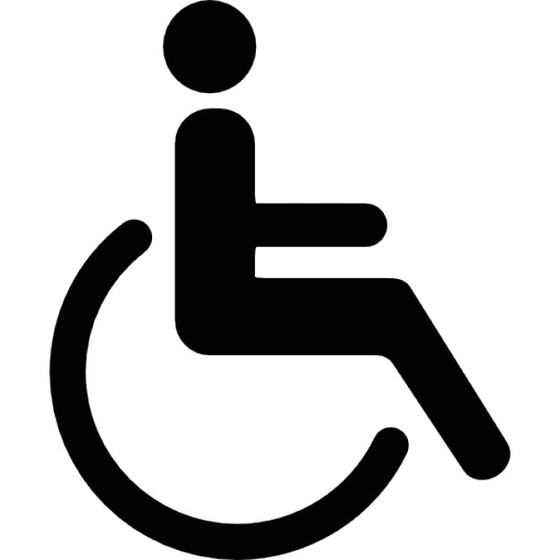
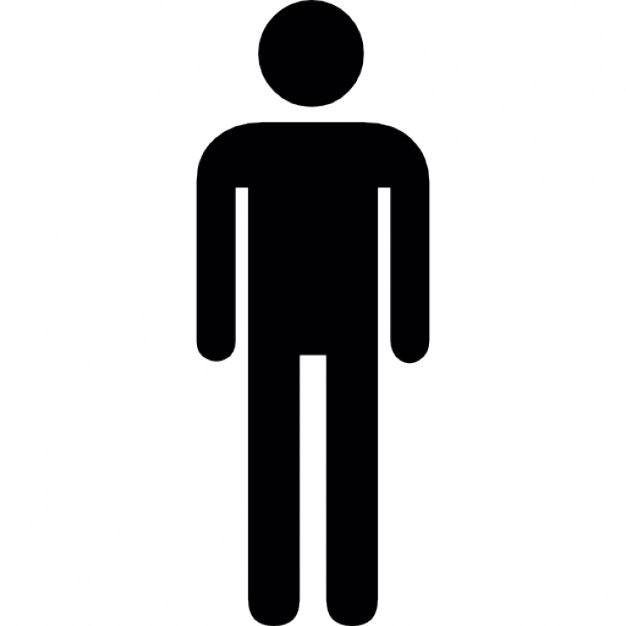

Seu browser não suporta Canvas :/
Tente novamente com o Firefox ou o Google Chrome.
Bem vindo!
Escolha seu personagem:


Impossível ir até o local devido a falha de acessibilidade!
Este lugar fere a lei de acessibilidade xx.xx
Ok
Janela de depuração:
Para testar os recursos do jogo
Desenhar Paredes
Modo Criação
Atalhos:
Inicio
Pátio
NCEX
RU
Bloco das Coordenações
Casa Velha
Ir Para:
,
Ir
Modo Criação:
Paredes: